更新时间：2026-10-11T03:00:26+08:00；最终审阅版。目标交付北京时间08:16:54；训练软截止07:16:54。
审阅建议：先解决参考分配和数量校准问题。仅部分支持K32-like状态的方向响应；不支持把当前丰度作为可靠K32细胞计数或全部MP10-high细胞计数。真实切片的未稳定模型仅作探索初版，具体证据与限制见A–G。
| model | execution_status | numerical_status | biological_evidence | epochs | actual_n_draws |
|---|---|---|---|---|---|
| NB_LOWER80 | COMPLETED | STABLE | 部分支持 | 250 | 1000 |
| GSE171351_B1 | COMPLETED | PROVISIONAL_NOT_CONVERGED | 不可评价 | 30000 | 1000 |
| DEV | COMPLETED | STABLE | 部分支持 | 9000 | 1000 |
| GSE238145_B17 | COMPLETED | STABLE | 不可评价 | 29000 | 1000 |
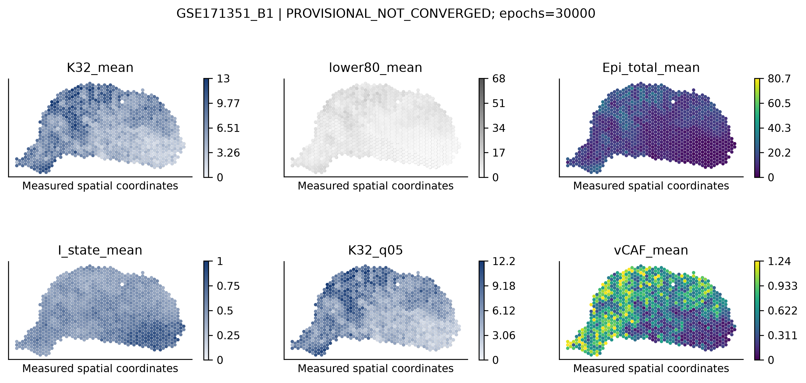
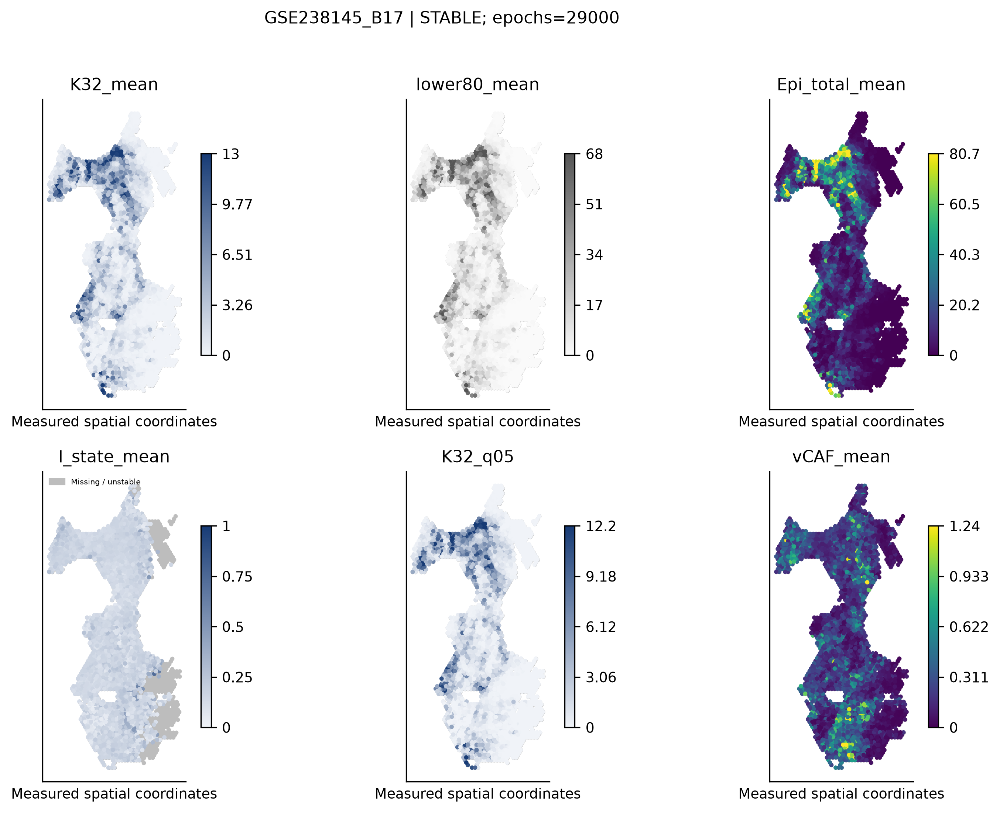
| model | scope | level | unit | target | numerical_status | n_spots_total | n_evaluable | n_samples | n_source_groups | n_datasets | MAE | RMSE | bias | true_mean | predicted_mean | calibration_slope | calibration_intercept | spearman_descriptive | coverage90 | mean_interval_width |
|---|---|---|---|---|---|---|---|---|---|---|---|---|---|---|---|---|---|---|---|---|
| DEV | A_C_unique | ALL | ALL | K32_count | STABLE | 230 | 230 | 15 | 8 | 4 | 1.008 | 1.801 | -0.1614 | 1.521 | 1.359 | 0.4555 | 0.6666 | 0.6905 | 0.08423 | 0.333 |
| DEV | A_C_unique | ALL | ALL | epithelial_count | STABLE | 230 | 230 | 15 | 8 | 4 | 2.771 | 3.825 | -2.584 | 7.152 | 4.568 | 0.6295 | 0.06521 | 0.9183 | 0.02273 | 0.6054 |
| DEV | A_C_unique | ALL | ALL | K32_fraction_epi | STABLE | 230 | 200 | 14 | 8 | 4 | 0.2158 | 0.2934 | 0.1404 | 0.281 | 0.4214 | 0.7137 | 0.2208 | 0.6631 | 0.04585 | 0.08496 |
TRAIN 全部 57,008 个冻结上皮的 q80 = 0.22016683621566624（float64，linear / R type7）。K32 定义为冻结 FULL_Z_r1.00 的 C18，完整 3,282 个保留，其中高于阈值 3,176 个、低于或等于阈值 106 个；K32 内高分占比 96.77%，对全部高分上皮的覆盖率 13.10%。后者不是伪 spot 检出率。
新 NB：126,791 个 TRAIN 细胞，31 类，固定 G0 11,230 基因。非 K32 高分细胞从 reference 排除，保留用于 DEV 泛化。18,182 个旧范围外上皮仍标 outside_frozen_discovery_scope，不标作低状态或阴性。原 Cycling 来源合法成员保留。沿用 25/8/8 个保守来源组，不是已核验患者独立验证。
| split | label_v7 | n_cells | ucell_mean | ucell_median |
|---|---|---|---|---|
| DEV | Epi_K32_anchor | 634 | 0.342 | 0.3294 |
| DEV | Epi_MP10_lower80 | 23943 | 0.1503 | 0.1537 |
| DEV | withheld_MP10high_nonK32 | 4385 | 0.2709 | 0.2539 |
| TEST | Epi_K32_anchor | 253 | 0.3349 | 0.3174 |
| TEST | Epi_MP10_lower80 | 29864 | 0.1463 | 0.1482 |
| TEST | withheld_MP10high_nonK32 | 7612 | 0.2765 | 0.2578 |
| TRAIN | Epi_K32_anchor | 2395 | 0.367 | 0.3571 |
| TRAIN | Epi_MP10_lower80 | 45544 | 0.1408 | 0.1424 |
| TRAIN | withheld_MP10high_nonK32 | 9069 | 0.2638 | 0.2529 |
所有 31 类均用本轮 TRAIN 重新拟合，不拼接历史全数据 signature。展示基因 ELOVL5、INSIG1、LDLR 已在空间预测前按 TRAIN 支持与效应固定。按 UCell 选择 lower80 后程序基因差异部分属于设计预期，不独立证明生物学可区分性。计数均值 log2FC 使用 pseudocount=0.1，无逐细胞 DEG 显著性检验。
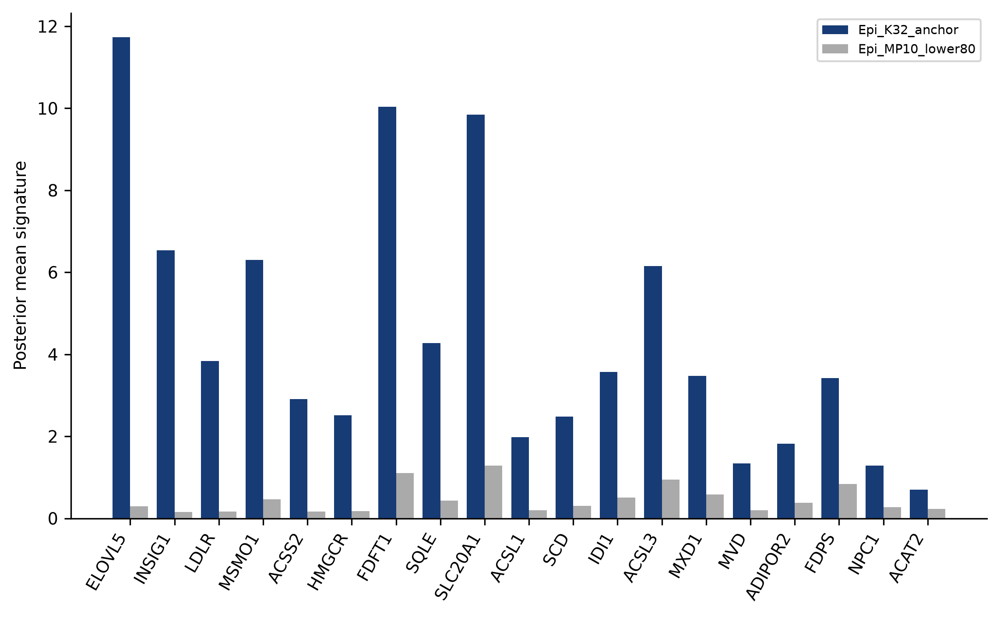
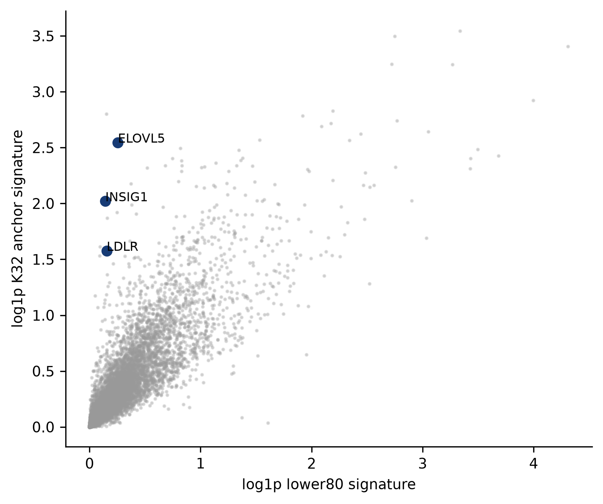
| new_label | old_label | log1p_Pearson | new_sum | old_sum | amplitude_ratio |
|---|---|---|---|---|---|
| Epi_K32_anchor | Epi_K32 | 0.9941 | 5505 | 4954 | 1.111 |
| Epi_MP10_lower80 | Epi_other | 0.9981 | 4307 | 4626 | 0.9311 |
| vCAF | vCAF | 0.9996 | 2346 | 2278 | 1.03 |
436 个唯一 bag，15 个实际 sample、8 个来源组；实际来源人数按清单核验，未为了附件预计的14而删来源。每 bag 同一样本20个不同细胞；A/B零剂量与C重叠仅映射一次。full RNA 锚点7005，整数二项稀释。所有20个细胞（含 withheld-high）贡献 counts；31列真值和可小于20。A/C用于 exact K32 回收；N_epi=0的比例是NA。
| model | scope | level | unit | target | numerical_status | n_spots_total | n_evaluable | n_samples | n_source_groups | n_datasets | MAE | RMSE | bias | true_mean | predicted_mean | calibration_slope | calibration_intercept | spearman_descriptive | coverage90 | mean_interval_width |
|---|---|---|---|---|---|---|---|---|---|---|---|---|---|---|---|---|---|---|---|---|
| DEV | A_C_unique | ALL | ALL | K32_count | STABLE | 230 | 230 | 15 | 8 | 4 | 1.008 | 1.801 | -0.1614 | 1.521 | 1.359 | 0.4555 | 0.6666 | 0.6905 | 0.08423 | 0.333 |
| DEV | A_C_unique | ALL | ALL | epithelial_count | STABLE | 230 | 230 | 15 | 8 | 4 | 2.771 | 3.825 | -2.584 | 7.152 | 4.568 | 0.6295 | 0.06521 | 0.9183 | 0.02273 | 0.6054 |
| DEV | A_C_unique | ALL | ALL | K32_fraction_epi | STABLE | 230 | 200 | 14 | 8 | 4 | 0.2158 | 0.2934 | 0.1404 | 0.281 | 0.4214 | 0.7137 | 0.2208 | 0.6631 | 0.04585 | 0.08496 |
| DEV | A_C_unique | ALL | ALL | total_cells | STABLE | 230 | 230 | 15 | 8 | 4 | 5.483 | 7.993 | 3.186 | 20 | 23.19 | NA | NA | NA | 0.2799 | 3.711 |
| DEV | A_C_unique | ALL | ALL | vCAF_count | STABLE | 230 | 230 | 15 | 8 | 4 | 0.7022 | 1.272 | 0.6801 | 0.04001 | 0.7201 | 0.6961 | 0.6922 | 0.1243 | NA | NA |
| model | scope | level | unit | target | numerical_status | n_spots_total | n_evaluable | n_samples | n_source_groups | n_datasets | MAE | RMSE | bias | true_mean | predicted_mean | calibration_slope | calibration_intercept | spearman_descriptive | coverage90 | mean_interval_width |
|---|---|---|---|---|---|---|---|---|---|---|---|---|---|---|---|---|---|---|---|---|
| DEV | A_C_K32_positive | ALL | ALL | K32_count | STABLE | 120 | 120 | 12 | 8 | 4 | 1.272 | 1.993 | -0.9764 | 2.992 | 2.015 | 0.4419 | 0.6933 | 0.6688 | 0.1946 | 0.4059 |
| DEV | A_C_ratio_interior | ALL | ALL | K32_fraction_epi | STABLE | 100 | 100 | 12 | 8 | 4 | 0.2493 | 0.2961 | 0.1401 | 0.4344 | 0.5745 | 0.5961 | 0.3155 | 0.3412 | 0.1146 | 0.1053 |
区间覆盖另列阳性K32与内部比例：连续正丰度后验对精确0、比例对精确0/1的覆盖存在边界限制；不以q05>0定义检出。
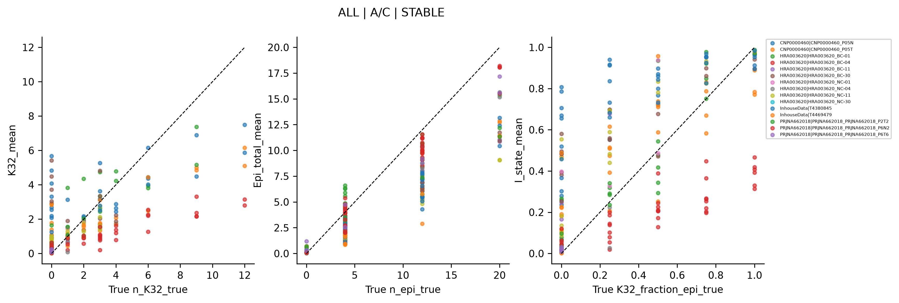
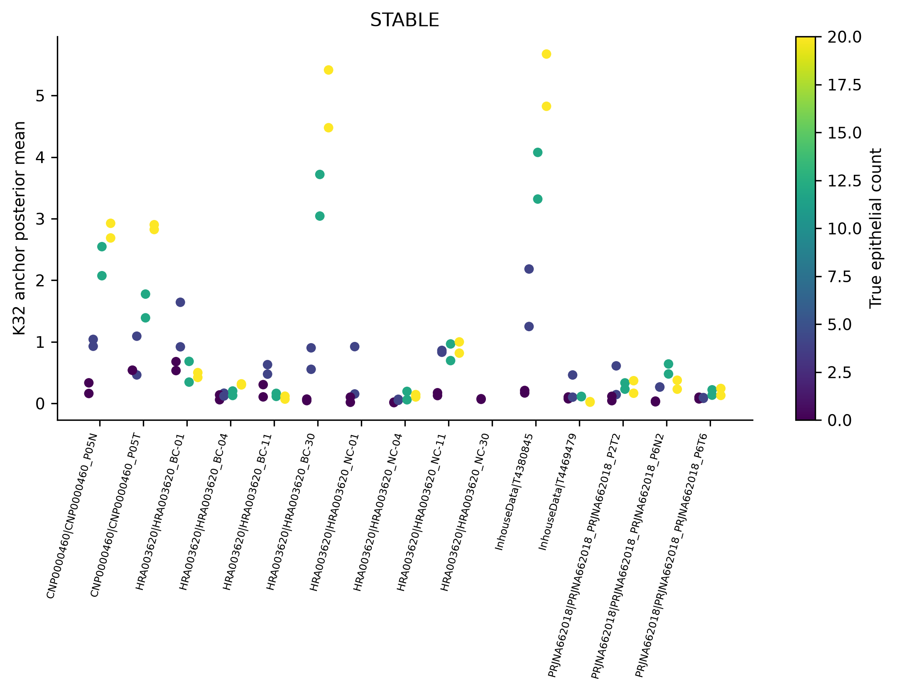
| n_epi_true | level | n_bags | n_groups | K32_mean_groupweighted | K32_median_groupweighted | K32_q95_groupweighted | K32_median_technical | K32_q95_technical | K32_max | epi_pred_mean | epi_true | vCAF_pred_mean | vCAF_true_mean | dataset | sample | source_group |
|---|---|---|---|---|---|---|---|---|---|---|---|---|---|---|---|---|
| 0 | n_epi_true | 30 | 8 | 0.1726 | 0.1052 | 0.5412 | 0.1046 | 0.54 | 0.6796 | 0.2293 | 0 | 0.6937 | 0.05208 | NA | NA | NA |
| 4 | n_epi_true | 28 | 8 | 0.696 | 0.5551 | 2.184 | 0.5158 | 1.506 | 2.184 | 2.619 | 4 | 0.632 | 0.05208 | NA | NA | NA |
| 12 | n_epi_true | 26 | 8 | 1.329 | 0.6837 | 4.077 | 0.4131 | 3.619 | 4.077 | 7.601 | 12 | 0.6778 | 0.03125 | NA | NA | NA |
| 20 | n_epi_true | 26 | 8 | 1.812 | 0.5012 | 5.674 | 0.3738 | 5.268 | 5.674 | 13.07 | 20 | 0.709 | 0 | NA | NA | NA |
| model | scope | label | n_spots_total | n_evaluable | n_samples | n_source_groups | n_datasets | MAE | RMSE | bias | true_mean | predicted_mean | calibration_slope | calibration_intercept | spearman_descriptive |
|---|---|---|---|---|---|---|---|---|---|---|---|---|---|---|---|
| DEV | ALL_unique | vCAF | 436 | 436 | 15 | 8 | 4 | 0.7023 | 1.275 | 0.6793 | 0.04065 | 0.72 | 0.5868 | 0.6961 | 0.1176 |
| DEV | C | vCAF | 110 | 110 | 15 | 8 | 4 | 0.6141 | 1.202 | 0.5943 | 0.03385 | 0.6282 | 0.6351 | 0.6067 | 0.08865 |
B 的 exact K32 真值始终为0；对高参考的响应在广义 MP10 状态目标下另作泛化描述。二者并列，不因指标好坏切换目标。按上皮量4/12、同一具体背景比较剂量响应，完整逐来源结果见05_evaluation。主汇总先组内样本等权再来源组等权；技术重复不是新增患者。不使用二元检测阈值，不沿用8.367393或q05>0。
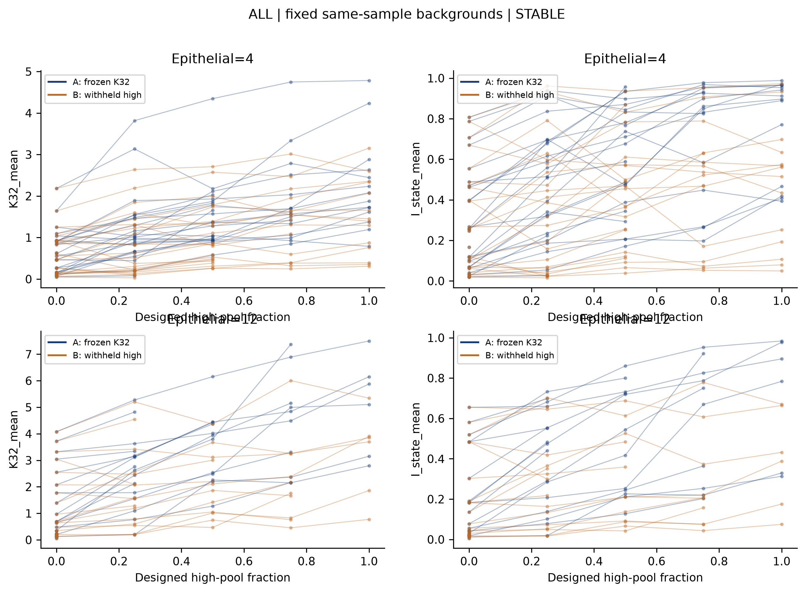
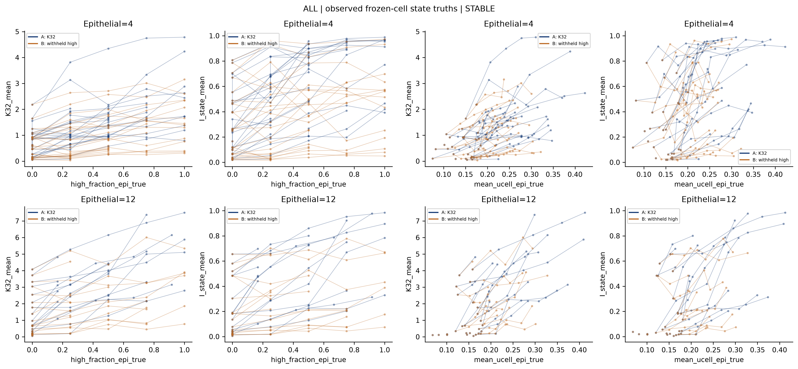
| n_epi | n_samples | n_groups | n_paired_repeats | K32_mean_high_minus_zero_A | K32_mean_high_minus_zero_A_n_evaluable_pairs | K32_mean_high_minus_zero_B | K32_mean_high_minus_zero_B_n_evaluable_pairs | I_state_high_minus_zero_A | I_state_high_minus_zero_A_n_evaluable_pairs | I_state_high_minus_zero_B | I_state_high_minus_zero_B_n_evaluable_pairs |
|---|---|---|---|---|---|---|---|---|---|---|---|
| 4 | 7 | 6 | 14 | 1.445 | 14 | 0.606 | 14 | 0.4324 | 14 | 0.1225 | 14 |
| 12 | 3 | 3 | 6 | 3.28 | 6 | 1.422 | 6 | 0.4509 | 6 | 0.138 | 6 |
| model | scope | level | unit | target | numerical_status | n_spots_total | n_evaluable | n_samples | n_source_groups | n_datasets | MAE | RMSE | bias | true_mean | predicted_mean | calibration_slope | calibration_intercept | spearman_descriptive | coverage90 | mean_interval_width |
|---|---|---|---|---|---|---|---|---|---|---|---|---|---|---|---|---|---|---|---|---|
| DEV | B | ALL | ALL | K32_count | STABLE | 260 | 260 | 15 | 8 | 4 | 1.344 | 1.821 | 1.344 | 0 | 1.344 | NA | NA | NA | 0 | 0.3796 |
| DEV | B | ALL | ALL | epithelial_count | STABLE | 260 | 260 | 15 | 8 | 4 | 2.693 | 3.401 | -2.535 | 7.271 | 4.736 | 0.6401 | 0.08171 | 0.8266 | 0.07917 | 0.6913 |
切片由既定 QC/规模/assay 选择。两张均沿用已接受历史 prior：N_cells_per_location=20、detection_alpha=20；这是模型先验，不是真实核计数。所有原 QC spots 和完整31类保留，没有按预测上皮过滤。无可靠嵌入图像，采用原坐标图。MP10在完整实测基因宇宙中评分，B1精确复用原始Top20分数，B17按同一既定参数补算。
| section | dataset | n_spots | n_genes_full | median_full_UMI | G0_available | Top20_available | N_cells_per_location | detection_alpha | coordinates_valid | image_render | assay_recorded | selection_basis |
|---|---|---|---|---|---|---|---|---|---|---|---|---|
| GSE171351_B1 | GSE171351 | 1017 | 33538 | 8940 | 11230 | 20 | 20 | 20 | True | coordinates only | fresh-frozen polyA | User frozen default list; prior QC/size/depth/assay, no new prediction-based choice |
| GSE238145_B17 | GSE238145 | 2399 | 18030 | 6479 | 11230 | 20 | 20 | 20 | True | coordinates only | CytAssist FFPE v2 | User frozen default list; prior QC/size/depth/assay, no new prediction-based choice |
| model | execution_status | numerical_status | biological_evidence | epochs | actual_n_draws | n_spots |
|---|---|---|---|---|---|---|
| GSE171351_B1 | COMPLETED | PROVISIONAL_NOT_CONVERGED | 不可评价 | 30000 | 1000 | 1017 |
| GSE238145_B17 | COMPLETED | STABLE | 不可评价 | 29000 | 1000 | 2399 |
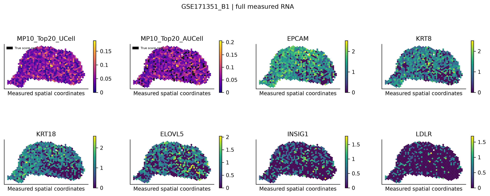
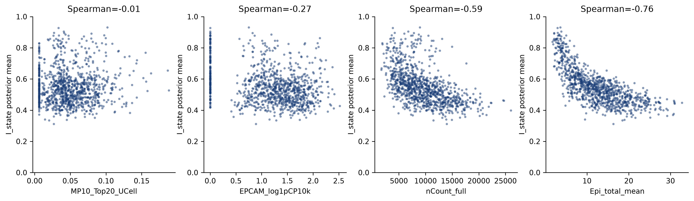
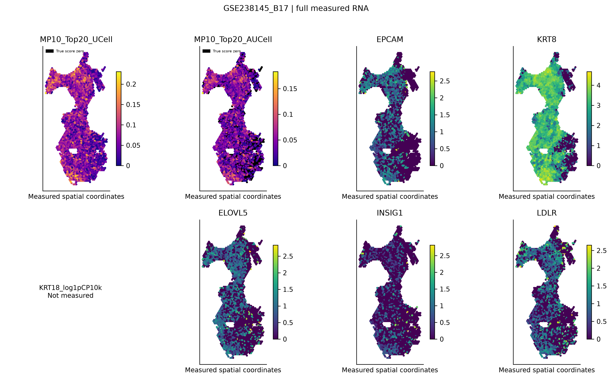
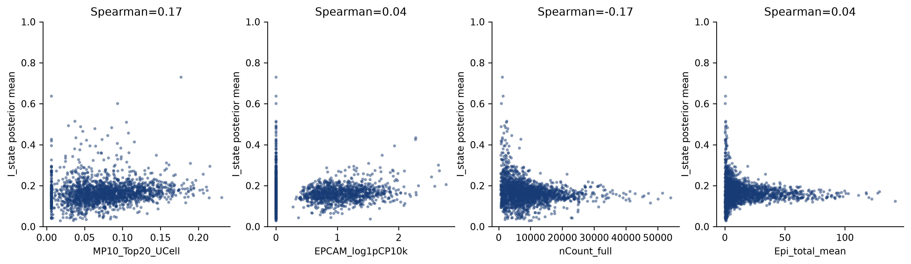
| section | predictor | n_spots | spearman | numerical_status |
|---|---|---|---|---|
| GSE171351_B1 | MP10_Top20_UCell | 1017 | -0.01311 | PROVISIONAL_NOT_CONVERGED; epochs=30000 |
| GSE171351_B1 | EPCAM_log1pCP10k | 1017 | -0.267 | PROVISIONAL_NOT_CONVERGED; epochs=30000 |
| GSE171351_B1 | nCount_full | 1017 | -0.5922 | PROVISIONAL_NOT_CONVERGED; epochs=30000 |
| GSE171351_B1 | Epi_total_mean | 1017 | -0.7571 | PROVISIONAL_NOT_CONVERGED; epochs=30000 |
| GSE238145_B17 | MP10_Top20_UCell | 2043 | 0.1707 | STABLE; epochs=29000 |
| GSE238145_B17 | EPCAM_log1pCP10k | 2043 | 0.03985 | STABLE; epochs=29000 |
| GSE238145_B17 | nCount_full | 2043 | -0.1746 | STABLE; epochs=29000 |
| GSE238145_B17 | Epi_total_mean | 2043 | 0.04499 | STABLE; epochs=29000 |
MP10是混合 spot 转录组分数，不能自动解释为上皮内在代谢活性；与相同程序基因共定位仅是表达一致性，不是统计独立验证。q05不是阳性概率。低分母比例缺失标灰，数量估计仍保留。
| model | path | execution_status | numerical_status | biological_evidence | epochs | actual_n_draws | n_spots | resume_command |
|---|---|---|---|---|---|---|---|---|
| NB_LOWER80 | /home/data/t070721/codex_workspace/Bladder Metabolism/mp10_k32_lower80_spatial_v7/01_reference | COMPLETED | STABLE | 部分支持 | 250 | 1000 | NA | bash "/home/data/t070721/codex_workspace/Bladder Metabolism/mp10_k32_lower80_spatial_v7/code/python.sh" "/home/data/t070721/codex_workspace/Bladder Metabolism/mp10_k32_lower80_spatial_v7/code/01_reference.py" |
| GSE171351_B1 | /home/data/t070721/codex_workspace/Bladder Metabolism/mp10_k32_lower80_spatial_v7/04_spatial_mapping/GSE171351/GSE171351_B1 | COMPLETED | PROVISIONAL_NOT_CONVERGED | 不可评价 | 30000 | 1000 | 1017.0 | bash "/home/data/t070721/codex_workspace/Bladder Metabolism/mp10_k32_lower80_spatial_v7/code/python.sh" "/home/data/t070721/codex_workspace/Bladder Metabolism/mp10_k32_lower80_spatial_v7/code/04_mapping.py" GSE171351_B1 block |
| DEV | /home/data/t070721/codex_workspace/Bladder Metabolism/mp10_k32_lower80_spatial_v7/03_dev_mapping/DEV | COMPLETED | STABLE | 部分支持 | 9000 | 1000 | 436.0 | bash "/home/data/t070721/codex_workspace/Bladder Metabolism/mp10_k32_lower80_spatial_v7/code/python.sh" "/home/data/t070721/codex_workspace/Bladder Metabolism/mp10_k32_lower80_spatial_v7/code/04_mapping.py" DEV block |
| GSE238145_B17 | /home/data/t070721/codex_workspace/Bladder Metabolism/mp10_k32_lower80_spatial_v7/04_spatial_mapping/GSE238145/GSE238145_B17 | COMPLETED | STABLE | 不可评价 | 29000 | 1000 | 2399.0 | bash "/home/data/t070721/codex_workspace/Bladder Metabolism/mp10_k32_lower80_spatial_v7/code/python.sh" "/home/data/t070721/codex_workspace/Bladder Metabolism/mp10_k32_lower80_spatial_v7/code/04_mapping.py" GSE238145_B17 block |
loss检查：相邻500 epochs均值变化<0.005；丰度检查：至少相隔2000实际epochs的256抽样均值，K32/lower80/总上皮相对变化中位数<0.05且q95<0.20；至少5000 epochs。时间限制与数值稳定分开。参考冻结后所有映射共享相同signature hash。实际运行配置、PID、种子与哈希见00_manifest。
| model | n_spots | median_detection | expected_observed_RNA_ratio | median_abs_relative_RNA_error | interpretation |
|---|---|---|---|---|---|
| DEV | 436 | 0.07559 | 1.017 | 0.04496 | plug-in posterior mean reconstruction; good RNA fit does not guarantee correct cell abundance |
| GSE171351_B1 | 1017 | 0.09148 | 0.9949 | 0.008598 | plug-in posterior mean reconstruction; good RNA fit does not guarantee correct cell abundance |
| GSE238145_B17 | 2399 | 0.1185 | 1.001 | 0.01138 | plug-in posterior mean reconstruction; good RNA fit does not guarantee correct cell abundance |
RNA重建质量与真实细胞数量恢复是不同评价对象；良好的表达重建不能抵消DEV数量偏差。达到epoch上限的模型保留检查点，当前block命令不会突破冻结上限。
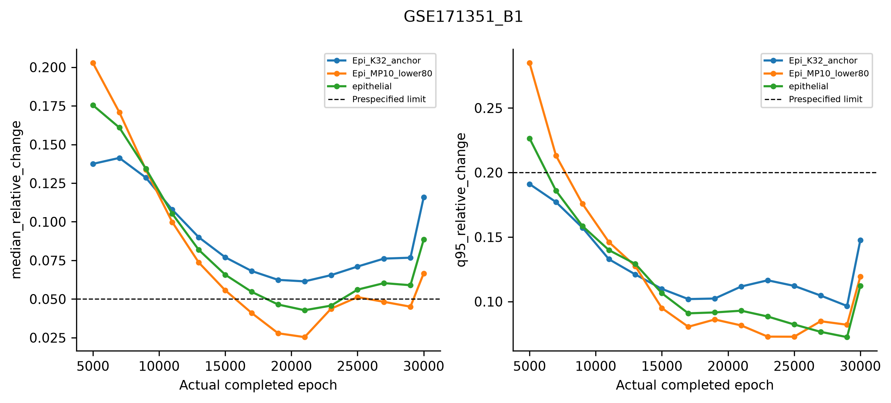
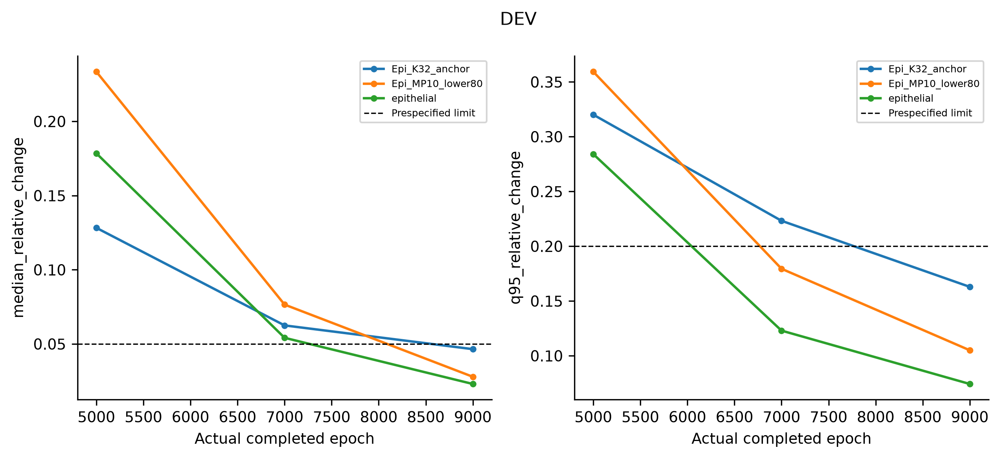
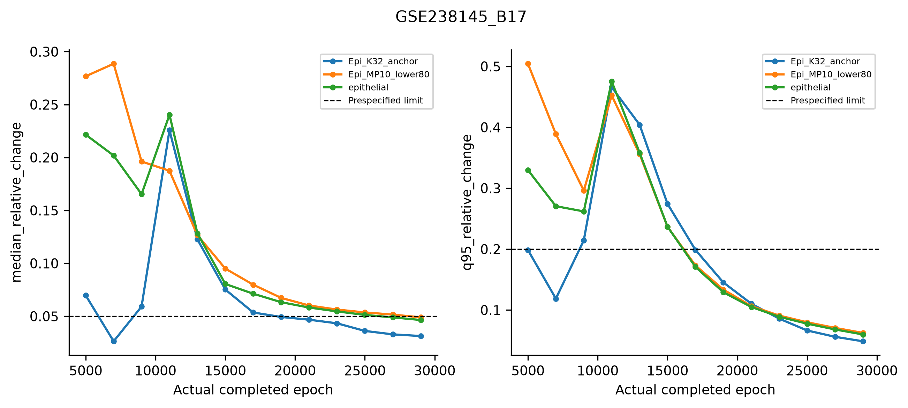
# 中文审阅结论 建议：先解决参考分配与数量校准问题，暂不扩大到全量切片，也不把当前高参考丰度解释为可靠的K32细胞数或全部MP10-high上皮细胞数。新参考存在多基因表达对比和DEV剂量方向响应，因此对“可供探索的K32-like参考状态”仅部分支持；数量恢复不支持可靠定量。真实空间结果的数值状态逐片列出，与生物学证据分开。 A. 范围、阈值和支持 TRAIN全部57,008个冻结上皮的float64 linear q80为0.22016683621566624。完整K32=3,282：3,176高于阈值（96.7703%），106不高于阈值仍保留；K32只覆盖全部24,242个高分上皮的13.1012%。这两个覆盖关系都不是伪spot检出性能。 TRAIN/DEV/TEST的K32人数为2,395/634/253，lower80为45,544/23,943/29,864，withheld高分非K32为9,069/4,385/7,612。全量lower80=99,351、withheld=21,066。旧范围外18,182另列outside_frozen_discovery_scope，既不标低状态也不进入本轮阴性真值。新NB使用126,791个TRAIN细胞、31类、11,230个同序G0基因；原Cycling来源合法冻结成员保留。25/8/8个保守来源组未独立核验为患者；DEV实有15个样本，不为匹配预计14而删样本。 B. Reference差异 NB在250 epochs达到预设loss稳定条件；K32/lower80 log1p Pearson=0.8545，旧K32/Epi_other=0.8837。相关性变化只作描述。NB signature log2FC（pseudocount=0.1）：ELOVL5=4.920、INSIG1=4.715、LDLR=3.882，另有ACSS2、HMGCR、FASN等同向。TRAIN两组各≥30细胞的6个样本、5个来源组、3个dataset中，ELOVL5/INSIG1方向6/6一致，LDLR为5/6。其余支持不足来源列NA；不是逐细胞显著性检验。 使用UCell定义lower80使程序差异部分成为构建预期。真正来源留出的证据来自下述DEV混合恢复，不能用TRAIN效应或同程序空间共定位代替。展示基因ELOVL5/INSIG1/LDLR在新空间预测前冻结。K32与旧K32 signature相关0.9941，表达总幅度比1.1111；lower80与旧other相关0.9981、幅度比0.9311，vCAF幅度比1.0299。背景变化未自动解决绝对数量尺度问题。 C. DEV两端回收、低状态背景与竞争分配 436个唯一同样本20细胞bag，8个来源组、4个dataset，full-RNA目标7005，2个技术重复；所有bag细胞包括withheld均贡献counts。DEV在9,000 epochs稳定，导出1,000 draws。以下主指标先组内样本等权、再来源组等权，不把bag当新增患者。 A/C共230个唯一bag：K32 MAE=1.0081、RMSE=1.8014、bias=-0.1614，校准斜率=0.4555、截距=0.6666。总体小MAE受大量低数量/零值影响：真实K32=12仅6个bag、3个样本/来源组，平均预测5.0957，MAE6.9043；不能包装成高数量准确回收。真实K32=0预测均值0.8582；低丰度也与零背景重叠，本轮未调二元阈值。 总上皮MAE=2.7714、bias=-2.5844、斜率=0.6295。上皮内比例在200个可评价bag上的MAE=0.2158、bias=0.1404，不支持精确比例解释。90%后验区间整体覆盖偏低；连续正值后验有零/一边界限制，但排除边界后问题仍在：阳性K32覆盖19.5%（120个bag），内部比例覆盖11.5%（100个bag）。这些区间是模型后验不确定度，不能当作已校准的频率学置信区间。 C面板纯非上皮bag：K32伪丰度均值0.1726、来源加权q95=0.5412。20个纯lower80上皮bag：K32伪丰度均值1.8115、q95=5.6740，同时总上皮只预测13.0711；vCAF真值0却预测0.7090。错误并非仅来自混入TME；全29类分配简表和逐来源极端值均保留，未删竞争类型。q95是模拟丰度分布的分位数，不是阳性概率或新检测阈值。 最强低背景误分配实际出现在InhouseData|T4380845和HRA003620|HRA003620_BC-30：真实K32均为0、纯lower80上皮20个，技术重复中K32最高预测分别5.6740和5.4155。A/C K32 MAE按dataset为CNP0000460 1.5994（1组）、HRA003620 0.8474（4组）、InhouseData 1.1677（2组）、PRJNA662018 0.7403（1组）；组数少且可构建条件不同，不作dataset优劣显著性排名。 D. 高分非K32泛化与目标解释 同具体背景可配对的A/B端点（高剂量减零剂量）：上皮4时K32-reference丰度增量A=1.4455、B=0.6060，I_state增量A=0.4324、B=0.1225，7个样本/6组/14配对重复；上皮12时丰度增量A=3.2796、B=1.4220，I_state增量A=0.4509、B=0.1380，3个样本/3组/6配对重复。B存在响应但弱于A；在exact K32目标下B真值始终为0，在广义状态目标下则是有限泛化证据，两种解释同时保留。 A/B高池的原始UCell分布、RNA贡献并未完全匹配，所以较强A响应不能单独证明严格K32特异性。逐来源剂量曲线及对真实高分比例/原始UCell均值的响应均提供。模型更接近带来源和RNA量依赖的K32-like参考分配，不是全部MP10活跃细胞的通用计数器；不能临时换成宽泛状态目标来掩盖exact K32数量误差。 未追加旧S31同输入配对基线：附件要求默认三个mapping均已稳定后才启动可选基线，本轮该前提未满足。不是因DEV生物学效果不佳而跳过。旧v6数值仅为历史背景，不计算“标签修改带来的MAE改善”。第三张切片也未追加。 E. 两张真实切片的实际状态与图形解释 两张均沿用已接受历史prior N_cells_per_location=20、detection_alpha=20；20不是实际核计数。保留原1017/2399个QC spots和完整31类。只有可靠物理坐标，没有可验证嵌入H&E，故用坐标图。原完整矩阵Top20均20/20可测，G0为19/20，HMGCS1不在G0；B17 KRT18不可测而非零表达。 GSE171351_B1：保留1,017个spots，实际30,000 epochs，1,000个丰度后验draws；PROVISIONAL_NOT_CONVERGED，停止原因EPOCH_CAP。末次丰度比较为27,000→30,000 epochs，Epi_K32_anchor: median=11.586%, q95=14.747%；Epi_MP10_lower80: median=6.664%, q95=11.930%；epithelial: median=8.846%, q95=11.214%。I_state因低分母不可稳定计算0/1017（0.0%），这些spots未从数量图删除。K32/lower80丰度中位数6.256/5.623。I_state与混合spot MP10、nCount、总上皮的Spearman分别为-0.013、-0.592、-0.757。这些描述不等于真值验证；未稳定时连图形模式本身也只是初版。 GSE238145_B17：保留2,399个spots，实际29,000 epochs，1,000个丰度后验draws；STABLE，停止原因NUMERICAL_STABLE。末次丰度比较为27,000→29,000 epochs，Epi_K32_anchor: median=3.129%, q95=4.863%；Epi_MP10_lower80: median=4.892%, q95=6.243%；epithelial: median=4.643%, q95=5.988%。I_state因低分母不可稳定计算356/2399（14.8%），这些spots未从数量图删除。K32/lower80丰度中位数0.944/4.591。I_state与混合spot MP10、nCount、总上皮的Spearman分别为0.171、-0.175、0.045。这些描述不等于真值验证；未稳定时连图形模式本身也只是初版。 按图中原始坐标方向观察：B1的K32绝对丰度在左侧/左上部较强，而I_state在右下部更高，说明“绝对分配多”与“上皮内部比例高”并非同一空间模式；该片未稳定，不能固定为可靠生物学区域。B17的高K32分配主要见于上部左侧连接带及部分下部边缘，与较高总上皮区域有重叠；右侧若干低上皮区域的比例为灰色NA。B17的K32与lower80分布大体共享上皮区域，而I_state对比明显较弱。原始EPCAM/KRT8与ELOVL5图可作表达参照，INSIG1/LDLR更为稀疏；无组织学依据给这些区域标肿瘤、正常、niche或某种细胞。上述图形描述与数值摘要共同提供，非独立空间验证。 两片共同丰度色标采用pooled q99，比例固定0–1，裁切数和低分母缺失见display_limits.tsv；完整值未截断。I_state是逐draw比例再汇总，不能用两个q05相除。空间强度不能直接贴成一种细胞，也不按scRNA q80给spot判阳性。混合spot MP10与模型I_state的相关/反相关均不能单独证明上皮内在状态；共享程序基因共定位仅表达一致性。空间观察必须结合DEV定量失败和当前数值稳定性解读。 F. 完成与未完成分别记录 成员、counts、G0、来源隔离、唯一bag、posterior比例与数值校验已执行，当前951项检查无失败。唯一新NB与DEV已稳定；两张真实切片都完成实际拟合、检查点、1,000 draws、重建QC和空间图，但“已实际训练/导出”不等于“数值稳定/生物学通过”。具体stop_reason、epochs、稳定变化量、模型路径和命令见MODEL_INDEX.tsv及各RESULT_STATUS.json。 如达到30,000 epochs仍未稳定，状态为PROVISIONAL_NOT_CONVERGED，不因loss平坦改写为稳定；这属于既定epoch上限，不是8小时墙钟耗尽。当前block命令遵守原30,000上限，不会暗中继续训练。需要另行决定后续策略时可从服务器保存模型/优化器恢复，不应重新初始化冒称续训。技术无效与有限但未稳定分开，本轮没有用伪造图补技术错误。 G. 下一步建议与边界 先检查数量尺度和参考竞争分配，利用本轮同来源bag、全类型误差和后验校准证据定位问题；在解决前不将这些图作可靠K32细胞密度或全MP10-high丰度，不扩大63张。可保留当前K32-like状态图作带清楚限制的探索材料。若真实片达到epoch上限仍未稳定，应先解决其丰度漂移，再讨论扩展。 K32来自既有全量发现集，DEV/TEST已有历史查看，本轮是冻结候选的探索性迁移而非全新独立发现或临床验证。伪spot不能完整模拟scRNA到真实Visium的平台差异；保守来源组不是已核验患者。P07T占TRAIN K32的1461/2395=61.0%，本轮未新增NO_P07T模型，不能排除该来源依赖。范围、数量和来源限制不因技术训练完成而消失。真实两片探索已按本轮新授权执行；没有自动扩展G1、多阈值、sample-balance、CNV、预后、CellChat或niche。
本轮K32 TRAIN中P07T贡献1461/2395（61.0%），没有新增去P07T参考，因此不能单独排除P07T依赖。本轮为既有冻结候选的探索性参考迁移，DEV/TEST此前已被查看；不是从头独立发现或临床验证。伪spot不能完整模拟scRNA与Visium平台差异。K32丰度不等于所有MP10-high细胞丰度。本轮明确授权两张真实空间探索，无全量63张扩展、G1、多阈值、CNV、CellChat或niche。